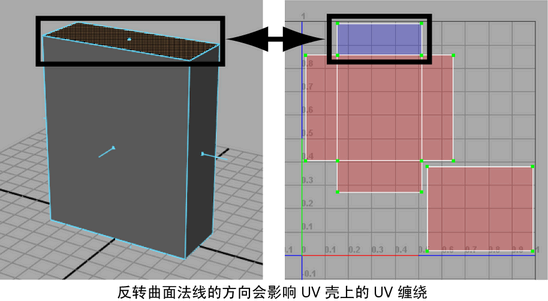

在“前面和背面颜色模式”(Front & Back Facing Color Mode)下使用“着色显示”(Shaded display)的“UV 编辑器”(UV Editor)。
当“前面和背面 颜色模式”(Front & Back Facing > Color Mode)模式处于活动状态时，其 UV 缠绕顺序为顺时针的选定 UV 壳将显示为使用半透明的蓝色进行着色。其 UV 缠绕顺序为逆时针的 UV 壳将显示为使用半透明的红色进行着色。
UV 缠绕顺序是指 UV 纹理坐标存储在特定面的曲面网格上所用的方向。该方向可以为顺时针或逆时针，使用纹理映射多边形网格时务必要知道该方向，因为会影响纹理贴图是否正确。
纹理贴图在多边形网格上可以显示为翻转或反转，具体取决于 UV 壳的缠绕方式。由于以下原因，可以反转 UV 缠绕顺序：
- 用于创建 UV 纹理坐标的原始 UV 映射可能会产生错误的 UV 缠绕顺序。例如，如果使用平面 UV 映射一个立方体，则 UV 缠绕在距投影平面最近的 UV 壳上将是顺时针，在立方体对侧的面上 UV 壳上将为逆时针。
- 当法线在多边形网格的某个面上翻转时，该面上的 UV 缠绕顺序将反转。

在 UV 编辑器中显示 UV 上的缠绕顺序
- 在 UV 编辑器中，选择要确定其缠绕顺序的任意 UV 或 UV 壳。
- 在“UV 编辑器”(UV Editor)菜单中，选择“视图 > 着色”(View > Shaded) >

这将打开“UV 贴图着色选项”(UV Map Shading Options)。
- 将“颜色模式”(Color Mode)设置为“前面和背面”(Front & Back Facing)以及任何所需的着色选项，然后单击“应用并关闭”(Apply and Close)。
有关这些选项的详细信息，请参见 UV 编辑器的“视图”(View)菜单。
选定 UV 壳显示为已着色并且是半透明的。缠绕顺序为顺时针（前面）的壳显示为使用蓝色进行着色。缠绕顺序为逆时针（背面）的壳显示为使用红色进行着色。由于增加了重叠区域中着色的不透明度，因此 UV 壳重叠的区域在视觉上很明显。 设置“颜色模式”(Color Mode)后，只需使用热键 5 或单击“对 UV 进行着色”(Shade UVs)图标 ( )，即可随时切换到“着色”(Shaded)模式。
)，即可随时切换到“着色”(Shaded)模式。
可以使用“翻转 UV”(Flip UVs)功能修改显示错误 UV 缠绕的任何 UV 壳。有关详细信息，请参见翻转或旋转 UV 壳。